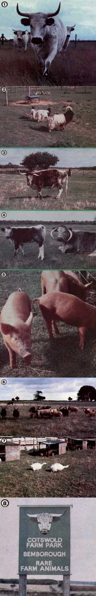

by David Lampe
Some wonderful animals could become extinct if steps aren't taken to...
If the animals shown in the accompanying photos were whales or dolphins, pandas or white tigers, or even blind albino fish the length of your little finger . . . they might be protected by law. But the pictured beasts are all examples of domestic species that have been nudged out of farmyards by "improved"-which often translates as more fashionable-breeds . . . to the extent that they've become endangered. In fact, many of our tame animals face extinction simply because such creatures have to please the fickle fancies of humans to survive.
Most farmers find they can't afford to go on raising unpopular-and thus unprofitable-animals, and zoos won't accept tame species unless the creatures look exotic. Animal preservation societies ignore our endangered livestock strains because such beasts aren't wild (although few would be very tractable pets). So there are no heart-tugging documentaries ... no boycotts of governments that approve the slaughter of such livestock ... nor even "Save the Tamelife!" bumper stickers to bring the cause of vanishing domestic breeds to public attention.
AN IRREPLACEABLE GENE BANK
You may be surprised to know that some farm animals have actually passed from popularity to extinction in as little as six years! In this century, for example, more than 20 separate British livestock breeds have ceased to exist . . . while six species of pigs were allowed to die out in just 20 years.
Nor is the problem confined to England alone. Since World War II, Denmark has-in the name of progress-systematically killed off all its "obsolete" livestock, and France was in the process of doing so, too . . . till some concerned Britons explained the possible consequences of such acts. Now the French are actually seeking out endangered tamelife to preserve, as are the Dutch and Austrians. But many other major agricultural nations-including our own-are doing nothing.
ONE MAN TO THE RESCUE
Fortunately, a few people are aware of the problem. Joe Henson, for example, is an English farmer who-with a partner-grows rye and barley on 2,000 windswept acres of Oxford University land in the Cotswold Hills. About ten years ago, Joe found out that his country's Zoological Society planned to slaughter the ancient livestock kept at Whipsnade Zoo . . . to feed the institution's lions and-at the same time-provide more space for wild animals.
Henson-who had for years been fascinated by old domestic breeds offered to shelter any Whipsnade sheep and cat tle that the Royal Agricultural Society or Reading University (Britain's premier agricultural college) hadn't room for.
Since he knew it would be expensive to keep the animals, Joe created a "farm park", where visitors could pay to picnic and to peer at historic British livestock. This enterprise enabled him to gradually gather in more remnants of old breeds. In fact, today he maintains 8 rare species of cattle, 12 of sheep, 2 of goats, 4 of pigs, 4 of horses, and 15 of poultry . . . all in all, the largest such collection-public or private-in his country. And Henson, more than any other one person, urged into existence the Rare Breeds Survival Trust: a unique, non-profit organization dedicated to finding and preserving unwanted, endangered domestic breeds.
SEAWEED-EATING SHEEP
The Trust's first major project was the saving of the Orkney sheep, which is the world's only ovine breed that is able to thrive on seaweed. Introduced to Scotland by the Vikings-and common throughout the Highlands until Bonnie Prince Charlie's defeat-the animals no longer exist on the island whose name they bear. Almost all the survivors were found on St. Kilda Island, where they were isolated from commercial flocks by a stone wall that kept them on the beaches. But that wall was rumored to be crumbling, and the shepherds were said to be thinking about slaughtering the Orkneys to keep their other flocks pure.
Joe Henson visited St. Kilda and found the wall intact, but he thought the rare sheep were no less endangered for all their well-enclosed security. "If something like hoof-and-mouth disease had swept the island," he explains, "all of its animals would have had to be put down ... and the seaweed eaters would have become extinct."
So Joe moved some of the sheep to his farm, where they learned to eat grass. The first lambs, however, had longer bones than those of their sires and dams, and Henson realized that new grazing conditions would radically alter the beasts' shape over the years. So the Rare Breeds Survival Trust spent all its initial funding-some 10,000 pounds-to buy an en tire island in the St. Kilda group and move some of the Orkney sheep onto it.
Now that the breed is established not only there, but on the Cotswold farm and on St. Kilda itself, it should survive . . . and careful crossbreeding among the three colonies can probably keep the species' bloodlines strong. At Henson's farm, some Orkneys are also being crossed with a related variety, the Flemish Landrace, to supplement the Orkney gene pool.
STRANGE, BIG, AND BEAUTIFUL
St. Kilda Island once had its own "native" sheep breed, which was probably another Viking introduction. None survives on the island, but the animals are still found elsewhere. Black and multihorned, they are strange enough in appearance to attract the attention of zookeepers. Still, only 250 of the animals existed when Henson assembled a flock at his park.
Some beasts of the Soay species-Europe's oldest-known sheep, which has remained unchanged since Neolithic times-also survive only on other islands in the St. Kilda group. Lambs of the breed are, at birth, almost certainly the world's largest in proportion to their mother's body weights, and the species may someday be in demand again. Henson and other Trust members made a point of assembling several flocks.
The prettiest sheep in Britain-without a doubt-are the Jacobs, said to be the breed in the Book of Genesis that provided the fleece for Joseph's "coat of many colors". The British animals descend either from sheep that swam ashore from the Spanish Armada or from animals that arrived in the dowries of Continental brides of English farming gentry centuries ago. After World War II, the British Wool Marketing Board (a state monopoly) no longer bought mottled fleece, making the Jacobs suddenly an endangered breed. Fortunately, the Trust discovered that several city park departments-as well as a number of private estates-are keeping Jacobs flocks to use as "living lawn mowers".
OTHER ENDANGERED LIVESTOCK
Warwickshire Longhorn cattle-which are almost twins in appearance to the beasts Neolithic artists painted on cave walls in France-were, like Jacobs sheep, believed to be endangered. But the Survival Trust was able to find several breeders who still raise the Longhorns (which, incidentally, are among the ancestors of our "traditional" Texas breed). Although they're considered too rangy by most modern butcher shops, the "obsolete" cattle do have an exceptionally high growth rate and will be wanted-at least as bloodstock-if and when British housewives again demand leaner beef.
Some rare breeds, the Trust discovered, had been neglected too long: Only one Norfolk Horn ram remained in all the British Isles, and no ewes. The Norfolk Horns are therefore considered extinct ... at least in Britain. All that have been found are some Norfolk-Suffolk and some Norfolk-Manx Loughtan crosses.
In order to prevent another such tragedy, Henson is already assembling a flock of Southdown sheep . . . a native English breed rapidly dwindling in its homeland, but still popular all over the rest of the world. In fact, the Survival Trust is continually looking abroad for examples of this and other rare British breeds. Tamworth and Berkshire pigs, for instance, were so few in number in Britain that they were becoming hopelessly inbred . . . until the Trust was able to bring home fresh lines from Australia.
"Recently, we got a letter from a woman in Kenya," Henson recalls, "whose grandfather, years ago, had taken a flock of old Scottish Dumpy chickens down there. The family had kept the flock going, and now it had about 100 hens. She wanted to know if we were interested in having some. Were we! Only ten of the birds still existed in Britain, and she had 100!"
Saving endangered poultry, he says, has always been a problem ... "unless you have something with feathers growing out of its head and a tail about eight feet long, which will be of interest to zoos". The average British bird fancier doesn't favor old utility fowl-like the Light Sussex, the Utility Rhode Island Red, or the North Holland Blue-which tend to eat more than do newer varieties. Therefore, such species are often endangered in Britain, though some are still numerous abroad . . . and the Trust, of course, wants to im port enough birds to keep the rare breeds going.
HELP FROM HOMESTEADERS
Interestingly enough, Joe has found that British communal farmers are also helping to preserve many types of endangered livestock.
"A good number of the 'back to the land' people get in touch with us," Joe explains. "Often, ten families or so will get together, buy one of the more ramshackle stately homes, and produce their own food on about 20 acres. Such individuals are finding that a lot of the traditional livestock survive without as much cosseting as the'improved' breeds require.
"These men and women are the kind of people-and there are many of them in your country too, I believe-who are attracted to such beasts as the Dexter cow ... the traditional Irish house cow. Half the size of, say, the Friesian, it produces half as much milk-or half as much meat-on less than halt as much food." [EDITOR'S NOTE: For more information on these mini-cows, see "The Amazing Irish Dexters" on page 71 of MOTHER NO . 62 . . . which is available for $3.00 plus $1.00 shipping and handling from THE MOTHER EARTH NEWS(restricted), P.O. Box 70, Henderson ville, North Carolina 28791.]
Because of the work of the Survival Trust, a lot of rare old breeds are being scientifically evaluated for the first time. Recently; for example, a white Chartley Park bull-a member of a breed that dates back to Britain's Roman occupation-was picked at random from a herd and put on test at the British National Agricultural Center.
"It was done largely as a joke," Henson admits. "The animal was being compared with bulls that had been selected for growth rate for generations, the best animals that had been bred that year . . . in short, the nation's top beef bulls.
"Amazingly enough, the Chartley calf matched all the competition for weight gain per day. And not only that, but-when his excess back fat was X-rayed-the testers found that the beast had less fat than any other bull in the test . . . which means that he'd probably produce more lean meat than any of the others. So now the Agricultural Center is testing Longhorns, Gloucesters, and all the other rare breeds.
"As a matter of fact, a Longhorn just beat all the modern breeds for live-weight gain per day . . . and, at the end of the test, the 'outdated' bull-unlike the more modern animalshad not yet attained his full growth!"
YOU CAN GET INVOLVED
The Rare Breeds Survival Trust keeps a priority list of breeds the organization hopes to save. What matters, Joe says, isn't just the number of survivors, but rather the number of bloodlines ... the number of viable males . . . and the animals' geographical distribution.
"You might find only 300 of a breed left," he explains, "but if they're scattered all over the country-and if there are enough bloodlines-the breed can be considered secure.
"On the other hand, there are 3,000 North Ronaldsay sheep, yet the breed is considered rare because the beasts are almost all on one island." Henson has recently installed a small flock of the animals at his farm park.
There are a dozen similar parks in Britain now . . . some on farms and some on the grounds of stately homes. Six of these, including Henson's, are approved Trust "Survival Centers". The Trust also keeps lists of members who are willing to raise herds or flocks on their land, but not to open their acreage for public show . . . and the organization has friends and members all over the world-people like you-who keep an eye out for rare livestock.
So if you know the location of any groups of "antique" farm animals-or if you want to join the Trust to encourage tamelife preservation-write to The Secretary, The Rare Breed Survival Trust Ltd., Dept. TMEN, c/o The Ark, Winkleigh, Devon EX 19 8SQ, England ... and please enclose $1.00 to cover expenses when you request information.
|
 [1] Chartley Park white cattle date from the time of Britain's Roman occupation. [2] Bagot goats and Indian Runner ducks. [3] The Texas Longhorn had ancestors like this. [4] Some strange-looking livestock varieties have been preserved in zoos. [5] A group of healthy ""obsolete"" pigs. [6] These species (which include the Hebridean, Merino, Norfolk horn, Wiltshire Horn, Portland, Orkney, White-faced-Woodland, Jacob, Southdown, and Herdwick sheep) nearly died out in England. [7] Two Sevastapol geese. [8] Paying visitors help finance endangered liverstock parks. |
|
|